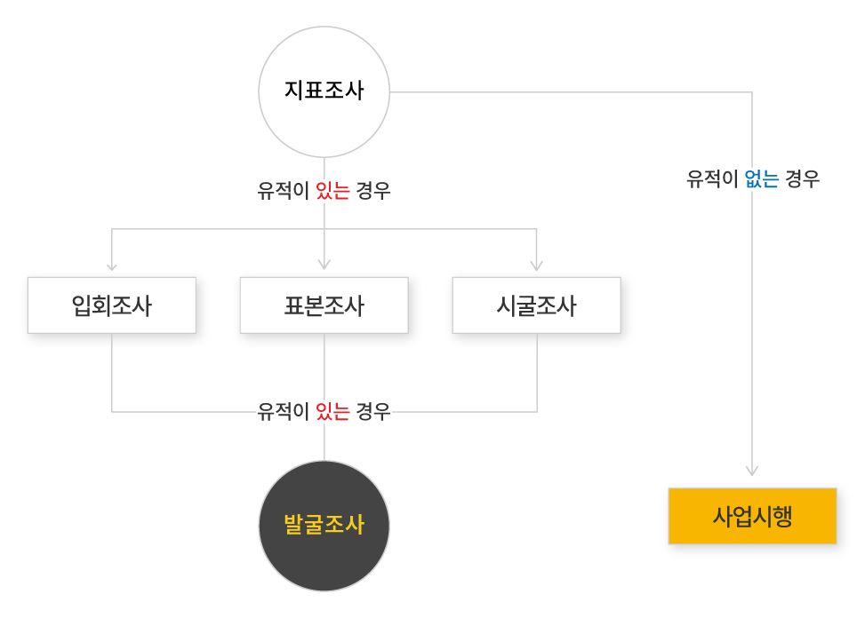

매장유산은 지정문화유산과 비지정문화유산으로 나뉜다
지정문화유산은 그 가치에 따라 국보, 보물, 사적, 명승, 천연기념물 등의 국가지정문화유산과 시도지정문화유산으로 지정된다. 비지정문화유산은 매장문화유산, 일반 통산문화유산의 지정되지 않은 문화재로 구분한다.
비지정문화유산 중 매장문화유산이란 법 제54조에 따라 '토지, 해저 또는 건조물 등에 포장(包藏)된 문화유산'이라고 정의되는데, 보통 발굴에 의해 그 모습을 드러내게 된다.
고고학에서는 매장문화유산을 유적, 유구, 유물로 구분한다. 유적은 유구와 유물이 있는 곳을 말하고 한 유적 안에서도 다양한 유구와 유물이 나타날 수 있다. 유구는 하나의 유적을 구성하는 일부를 말하며, 주거지, 고분, 건물터, 요지 등 옛 사람들이 이루어 놓은 구조물 하나하나를 일컫는 말이다. 유물은 과거에 인류가 만들어 사용한 것으로 선사주거지 고분 등과 같은 유적에서 출토된다.
유적을 발굴해보면 우리 조상들의 생활상과 유물들이 생생하게 남아있어 역사기록으로 알 수 없는 많은 것들을 알 수 있다. 그래서 발굴은 역사책으로 알 수 없었던 우리 조상들의 생활상을 알려주는 매우 중요한 것이다.
출처: 경인문화사, 2008, 『매장문화재의 정의』

매장유산조사는 최초의 지표조사부터 최종의 발굴조사까지 단계를 거쳐 진행되는 것이 일반적이다
1) 지표조사
조사지역에 유물, 유적을 지표상에 드러난 상태대로 확인하여 그 분포범위를 확인하는데 중점을 둔다. 훼손의 결과 지표상에 드러나 있는 경우가 있기 때문에 유물의 흔적을 가지고 그곳에 유적이 있는지를 알 수 있다. 이렇게 드러난 유물, 유적들을 지형을 훼손시키지 않은 채 그 분포상을 확인하는 것을 지표조사라고 한다.
또한 매장유산 뿐만 아니라 의식주, 풍속 등에 관한 민속자료와 전설, 민담, 민요, 방언, 가족제도 등 유무형의 자료들, 그리고 천연기념물 등 자연유산에 대해서도 빠짐없이 기록으로 남겨둔다. 지표에 드러난 유물, 유적을 확인하는데 한계가 있으므로 땅속에 들어가 있는 구조물을 확인하기 위해 자력계나 전자탐침봉을 이용하여 땅을 파지 않고도 유적을 찾는 방법도 있으며, 항공사진 촬영으로 땅속에 들어있던 옛도시 유적을 찾아내기도 한다.
2) 발굴조사
지표조사에서 확인된 유적을 좀 더 분명히 밝혀 보기 위해 발굴조사를 하게 된다. 발굴이란 땅 속에 들어있는 매장문화재를 과학적인 방법으로 드러내는 것을 말한다. 발굴조사는 유적의 중요성에 따라 보통 입회조사, 표본조사, 시굴조사 중 하나를 택하여 진행하게 된다. 이들 조사는 지표조사를 통해 확인된 유적의 범위 안에서 선별적으로 땅을 파서 유적의 분포범위를 명확하게 하기 위한 예비 조사의 성격을 띤다. 위 조사로 유적의 범위가 정해지면 전체 유적에 대한 발굴조사를 진행하여, 유적의 성격, 연대, 특징 등을 다각도로 검토하여 종합보고서를 발간하게 된다.
3) 조사 유형 구분
입회조사
별도의 허가 없이 공사를 착공한 후에 입회관이 참관하여 매장유산 분포 여부를 확인하는 조사이다.
표본조사
사전지역 중 유적의 2% 이내에서 굴토하여 문화재 분포 여부를 확인하는 조사이다. 예를 들면, 사업면적이 10,000㎡이고 문화재 분포구역이 5,000㎡라면 5,000의 2%, 즉 100㎡를 굴토하는데, 일부 지역을 20㎡(2×10m) 규모로 5군데를 골고루 굴토하는 것이다.
시굴조사
사전지역 중 유적의 10% 이내에서 굴토하여 문화재 분포 여부를 확인하는 조사이다.
정밀발굴조사
입회조사·표본조사·시굴조사를 실시한 이후, 문화재가 확인된 지역을 중심으로 전면제토하여 발견된 유구의 내부조사, 출토유물 수습, 유적 및 유물 분석 등, 총체적으로 유적의 성격을 규명하는 조사로 매장유산조사의 최종 단계이다.